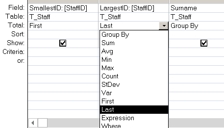

Return the first value from the result set of a query. (SQL).
Syntax
First (expression)
Key
expression The value/column to return.
The First and Last functions are analogous to the MoveFirst and MoveLast methods of a DAO Recordset object. They simply return the value of a specified field in the first or last record, respectively, of the result set returned by a query.
The First() function can be used in a Group By (Aggregate) SQL query.

This will return, for each surname the largest and smallest StaffID for the people with that surname.
Example
Select First(sales_id) from T_Sales Group By Department;
“Winning takes talent; to repeat takes character.” ~ John Wooden
Related:
Last - Return the last value from a query.